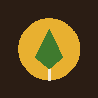

Ang Binhing Hindi Alam Kung Tutubo(Testing Lang Gud!)
Isang chapter book para sa kabataan · 11 Kabanata at Epilogo
Lahok sa Gawad Teodora Alonso 2025🎵 Testing Lang Gud — Ang KantaKantang kauban sa kuwento · pindota ang ▶
0:000:00

Isang chapter book para sa kabataan · 11 Kabanata at Epilogo
Lahok sa Gawad Teodora Alonso 2025